NDVI2GIF
Laboratorio de SIG y Teledetección
Estación Biológica de Doñana (CSIC)
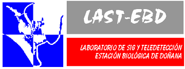
Laboratorio de SIG y Teledetección
El LAST es el servicio de SIG, teledetección y drones de la Estación Biológica de Doñana: da soporte a la investigación del centro y al seguimiento a largo plazo de la marisma. ebd.csic.es/web/last/inicio · last-ebd.blogspot.com
Responsable científico
Responsable técnico
El Principio. El concurso y la convergencia
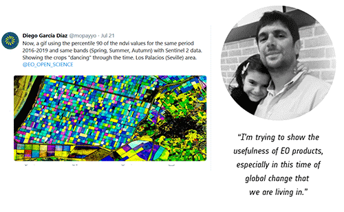
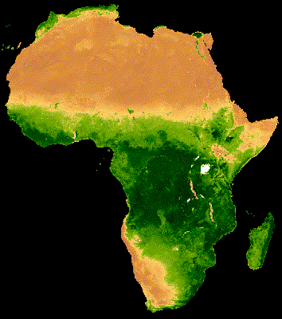
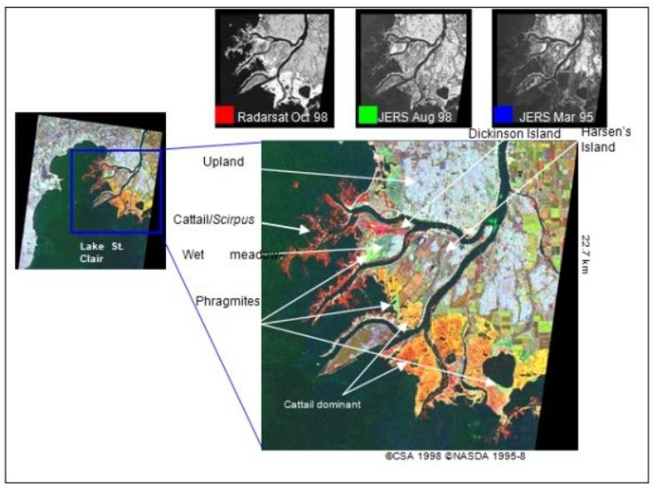
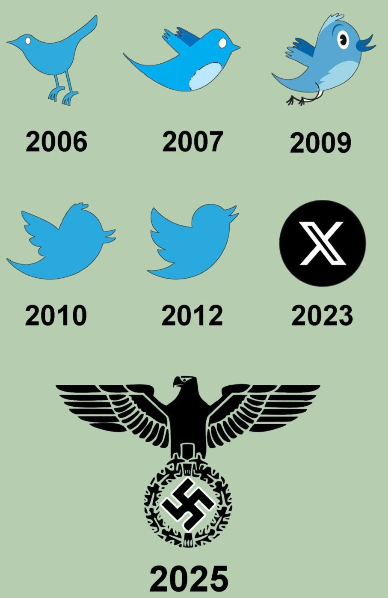
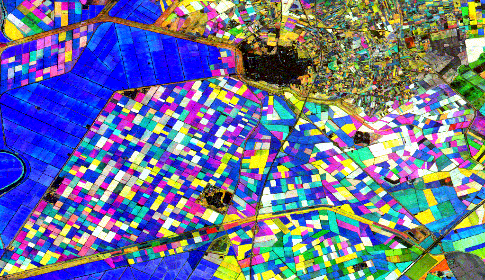
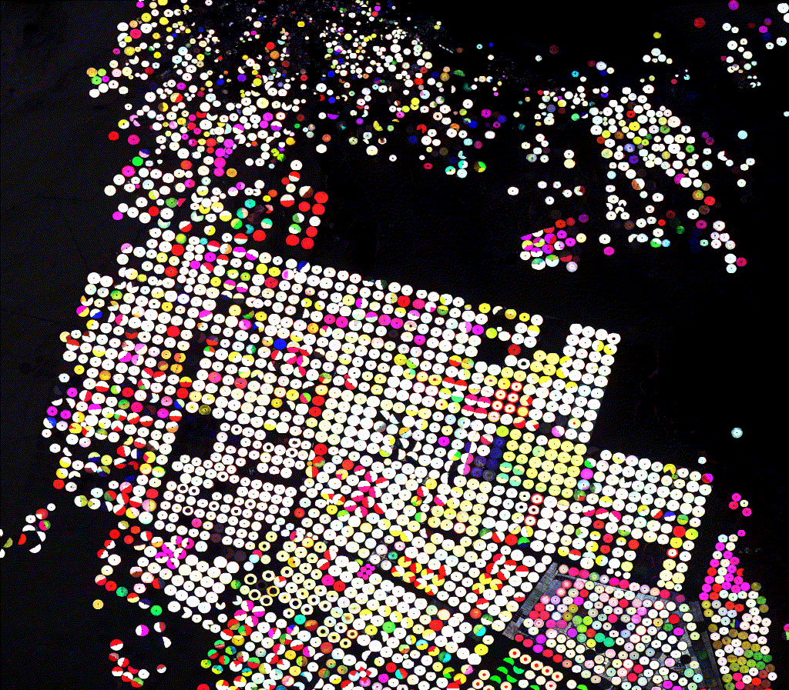
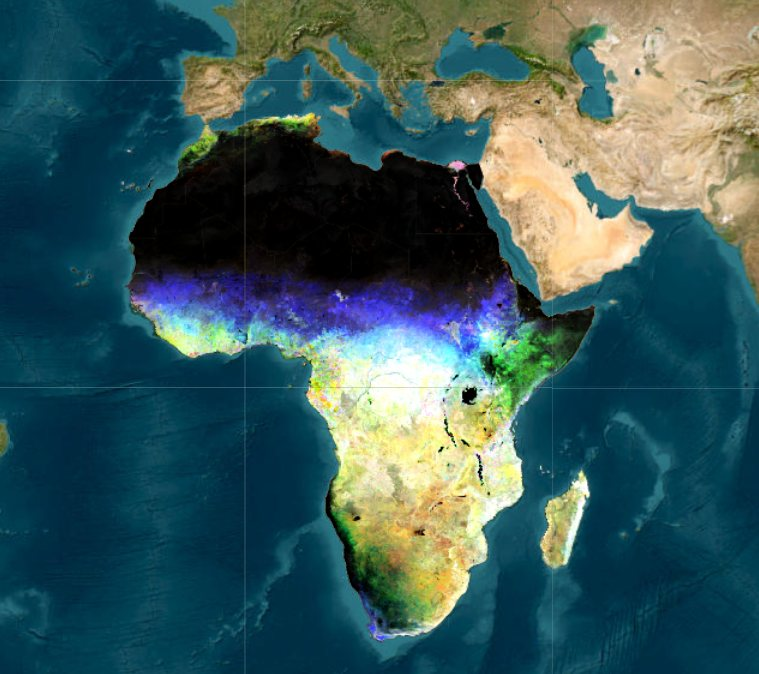
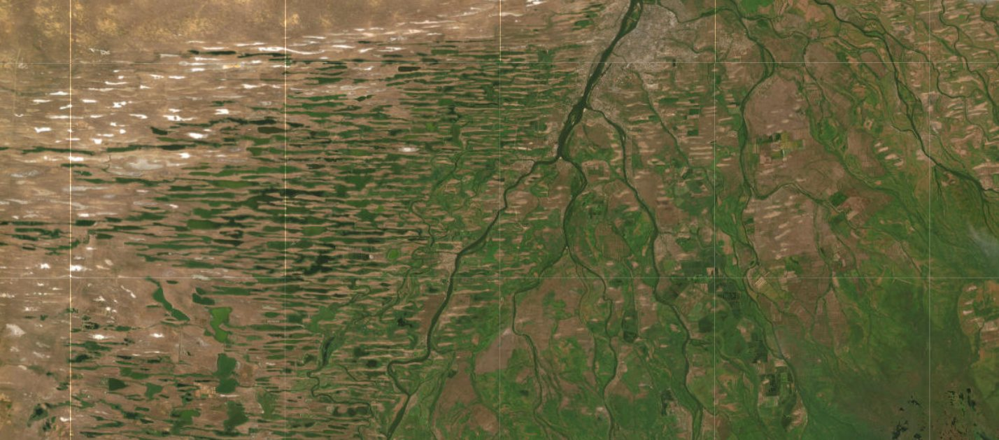
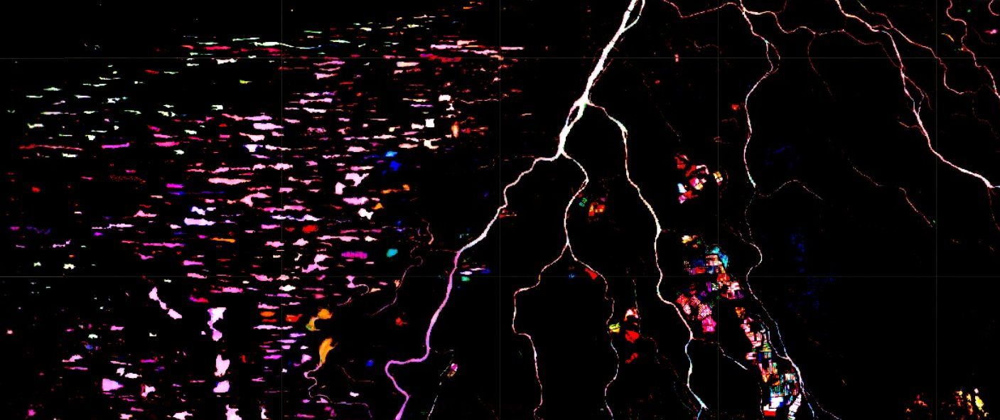
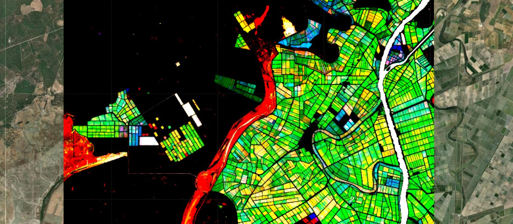
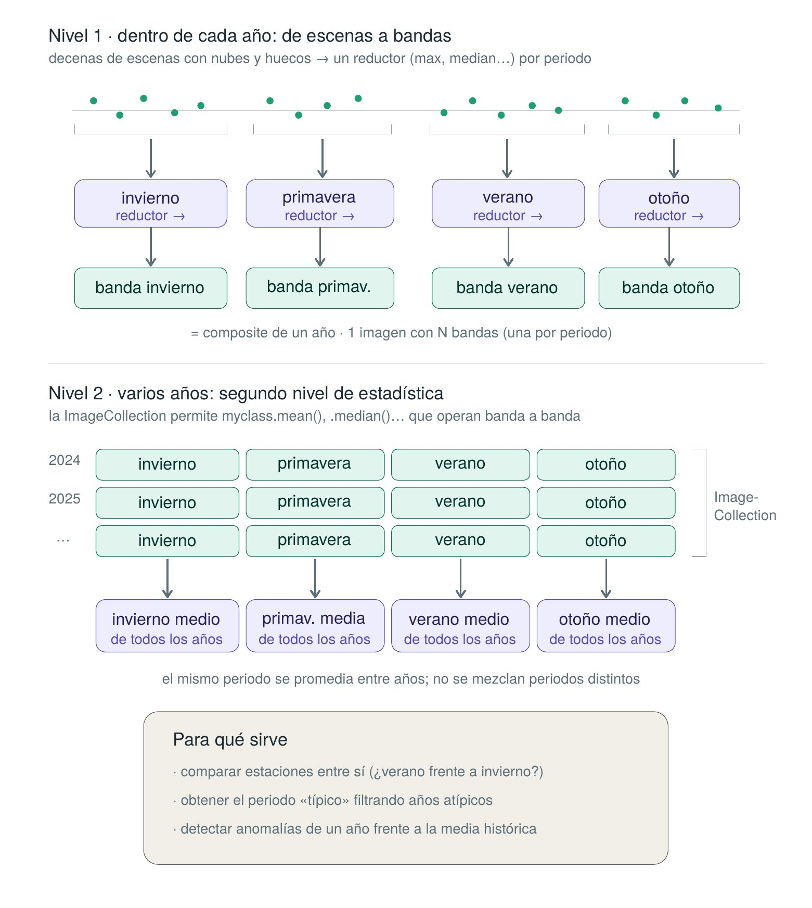
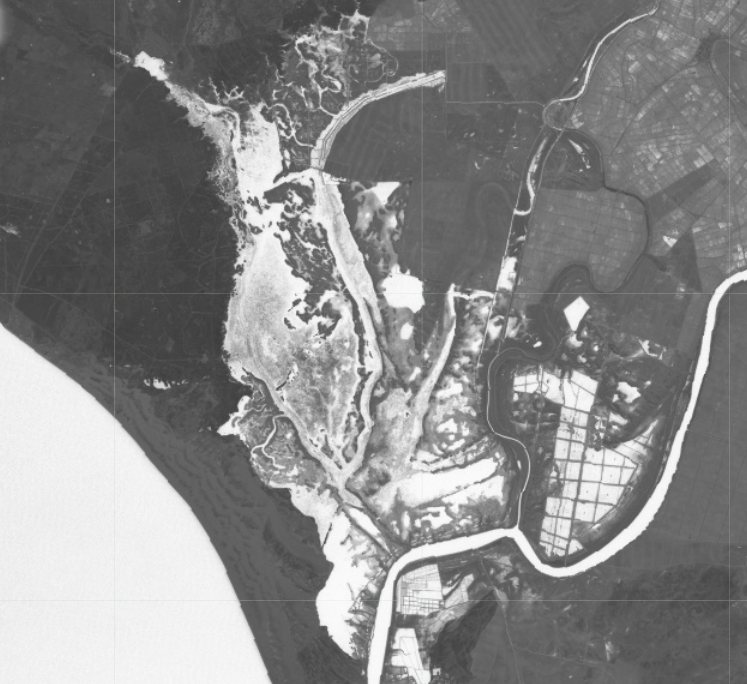
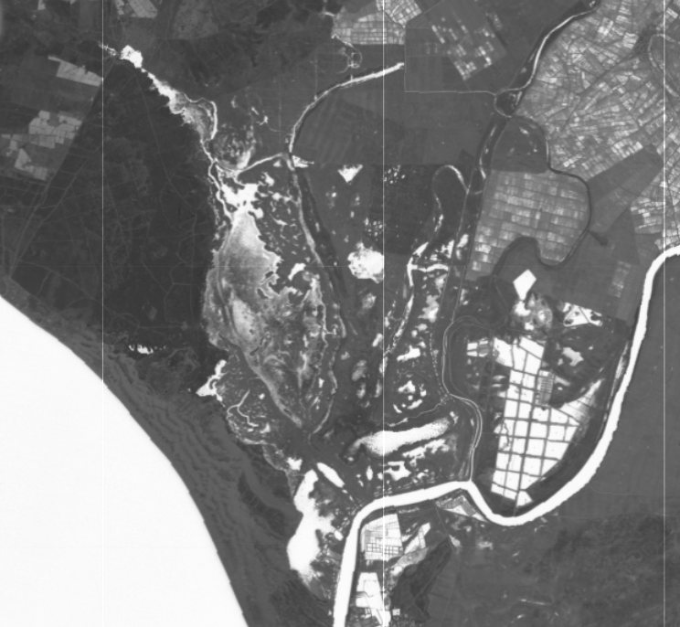
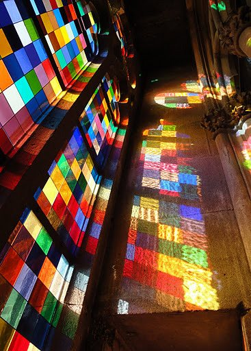
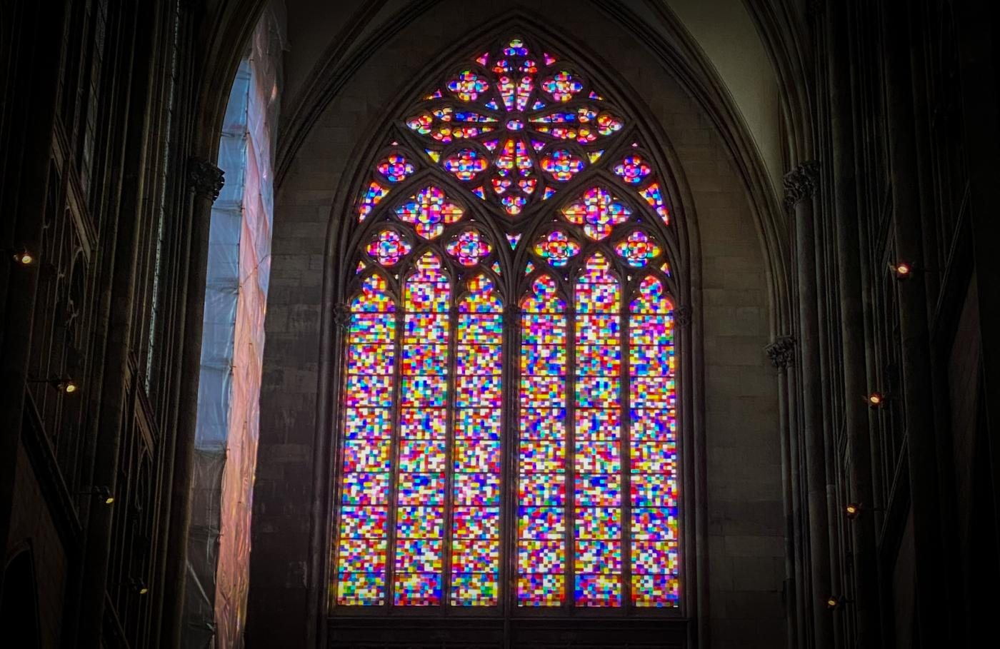
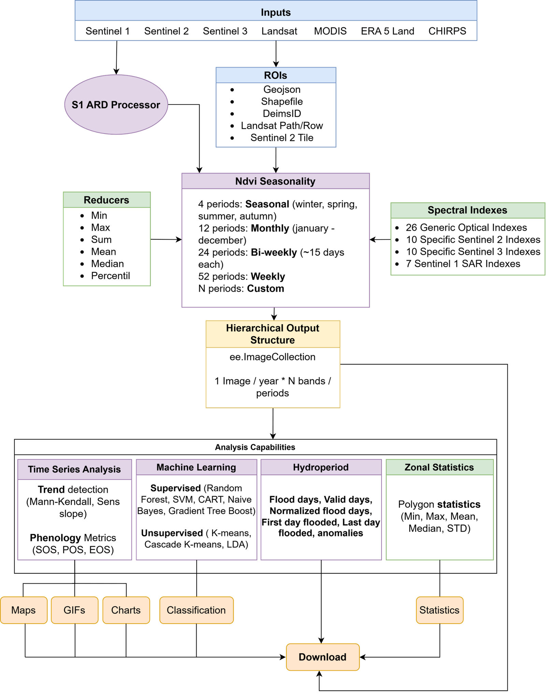
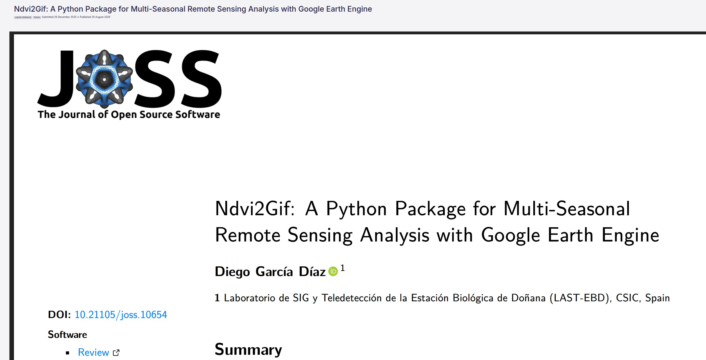
El código, la modestia y la humildad
NdviSeasonality
Genera composites temporales server-side en Google Earth Engine: divide el año en periodos y agrega cada uno con un reductor estadístico. La pieza de la que cuelga todo lo demás.
7 sensores y 2 climáticos
- Sentinel-1/2/3 · Landsat 4, 5, 7, 8 y 9 · MODIS
- Luces: VIIRS y DMSP-OLS · Clima: ERA5-Land y CHIRPS
Hasta 44 índices
- 44 en Sentinel-2 · 34 en Landsat · 33 en MODIS
- 23 en Sentinel-3 · 7 en Sentinel-1 · 47 variables ERA5
- ndvi · mndwi · evi · nbr · rvi · savi…
Periodos flexibles
- 4 estaciones · 12 meses · 24 quincenas · o N divisiones a medida
Once reductores por periodo
max pico de verdor median robusto a outliers
mean perfil suave sum lluvia min
percentile p10–p95 std variance
range cv count escenas
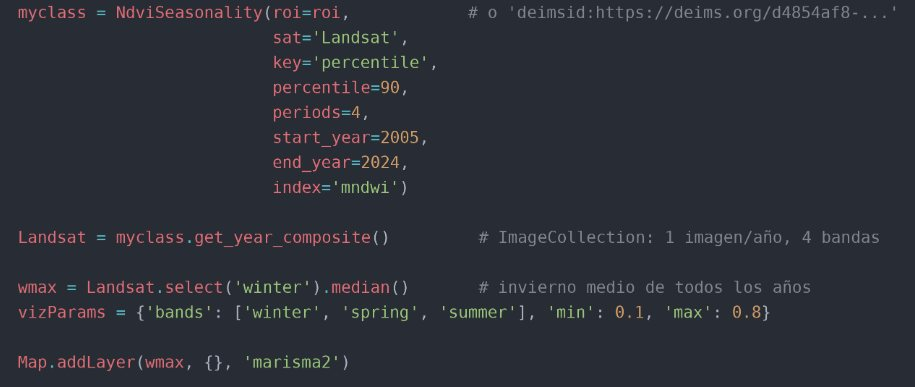
get_year_composite()get_period_composite()
get_peak_period()get_stats()get_gif()
export_to_drive()export_to_asset()
S1ARDProcessor
Convierte Sentinel-1 GRD crudo en Analysis Ready Data: corrección radiométrica del terreno y filtrado de speckle, todo dentro de GEE. Porque el radar ve de noche y entre nubes… pero llega lleno de “sal y pimienta”.
Corrección de terreno
- Flattening radiométrico VOLUME/SURFACE
- DEM: Copernicus 30 m · SRTM 30 y 90 m
- Corrige la geometría del relieve
5 filtros de speckle
- Refined Lee (por defecto)
- Lee · Lee-Sigma · Gamma-MAP
- Boxcar · kernel configurable
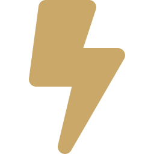
Salida lista para usar
- Lineal o decibelios (dB)
- Se integra como índice más
- vv · vh · vv_vh_ratio · rvi
dpsvi · rfdi · vsdi
process_image()apply_terrain_correction()
apply_speckle_filter()from_db()to_db()
LandCoverClassifier — poniendo etiquetas
Usa las métricas estacionales como features multitemporales y clasifica el territorio en GEE. La fenología separa cultivos, marisma y monte mejor que una sola imagen.
Feature stack
- Apila índices de todos los periodos
- + estadísticos: mean, std, max, min
- Varios sensores en una pila: resample=
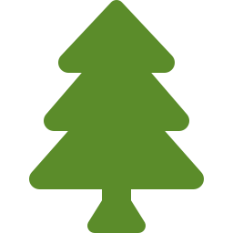
5 supervisados
- Random Forest (por defecto)
- SVM · CART
- Naive Bayes · Gradient Tree Boost
- Entrena desde FeatureCollection
3 no supervisados
- K-means · Cascade K-means (elige su k)
- LVQ, red neuronal competitiva
- Sin datos de entrenamiento
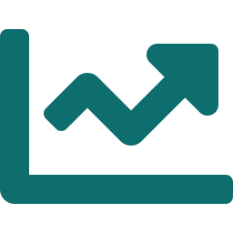
Validación
- Matriz de confusión
- Overall accuracy y Kappa
- Producer / user por clase
- Feature importance: qué índices mandan
create_feature_stack()add_training_data()
classify_supervised()classify_unsupervised()
get_accuracy_report()plot_confusion_matrix()
get_feature_importance()export_results()export_model()
TimeSeriesAnalyzer — leer el tiempo
Extrae la serie temporal de un punto o ROI y la interroga estadísticamente: ¿hay tendencia significativa? ¿cuándo verdece? Trabaja del lado del cliente, con la serie ya descargada.
Tendencias robustas
- Test de Mann-Kendall (no paramétrico)
- Pendiente de Sen · regresión lineal
- Significancia sin asumir normalidad

Fenología de un punto
- Inicio / pico / fin de estación
- Umbral · derivada · logístico
- Amplitud, duración y tasas
Dashboards de una llamada
- Serie + tendencia, patrón estacional
- Comparación interanual, autocorrelación
- Distribución y calidad del dato
extract_time_series()analyze_trend()
extract_phenology_metrics()plot_comprehensive_analysis()
plot_phenology_analysis()compare_phenology_years()
compare_smoothing_impact()
SpatialTrendAnalyzer — ¿dónde cambia?
La tendencia que TimeSeriesAnalyzer calcula para un punto, pero para todos los píxeles del ROI y entera dentro de GEE. Una sola llamada, un ráster de hacia dónde va cada parcela.
Tres métodos
- linear
- sen
- mann_kendall
- Mann-Kendall devuelve además la pendiente de Sen: el test dice si el cambio es real, Sen cuánto
Bandas de salida
- slope · intercept · magnitude
- tau
- magnitude: el cambio total del periodo
- tau: correlación de rangos con el tiempo, −1 a 1, sin unidades
Píxeles con poco dato, fuera
- min_observations=5 por defecto
- Enmascara donde no hay serie suficiente
- Exporta con export=True
calculate_pixel_trends(method, min_observations, export, scale)
SpatialPhenologyAnalyzer — la fenología como ráster
Las mismas métricas que TimeSeriesAnalyzer saca de un punto, pero para todos los píxeles del ROI y enteras dentro de GEE. En lugar de una curva, un mapa de cuándo despierta cada parcela.
Tres métodos
- Umbral sobre la amplitud de la curva
- Derivada: la máxima tasa de cambio
- Armónico (Fourier), el doble logístico no cabe en GEE
Nueve bandas
- sos · pos · eos · los
- Día del año, no una fecha suelta
- amplitude · peak_value · baseline
growth_rate · senescence_rate
Año a año, o el resumen
- extract_phenology_rasters(): una imagen por año
- phenology_summary(): la mediana de todos
- Pide periods=12 o 24; con 4 avisa
extract_phenology_rasters(method, export…)
phenology_summary(method, reducer)
HydroperiodAnalyzer — cuántos días bajo el agua
Calcula el hidroperiodo — días de inundación al año, píxel a píxel — íntegramente en GEE. Pensado para humedales como Doñana. Novedad de la v1.2.
Ponderación midpoint
- Cada escena “pesa” días según su fecha
- 5 máscaras de agua: mndwi · ndwi
awei · aweinsh · wi2015 - Acumula días inundados / válidos

Año hidrológico
- Empieza 1 de septiembre (configurable)
- Multi-ciclo: compute_all_cycles()
- Mapa de anomalías frente a la media
Métricas IRT
- Representatividad temporal del dato
- Global (Gini) y por píxel (Simpson)
- Bandas: first/last_flood_doy
compute_hydroperiod()compute_all_cycles()
compute_anomalies()get_water_masks()get_water_masks_stack()
compute_irt_global()compute_irt_image()
export_to_drive()export_to_asset()
export_water_masks_to_drive()export_water_masks_to_asset()
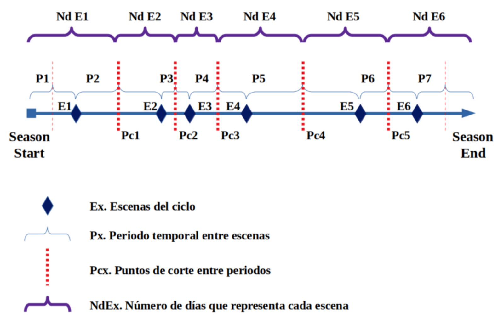
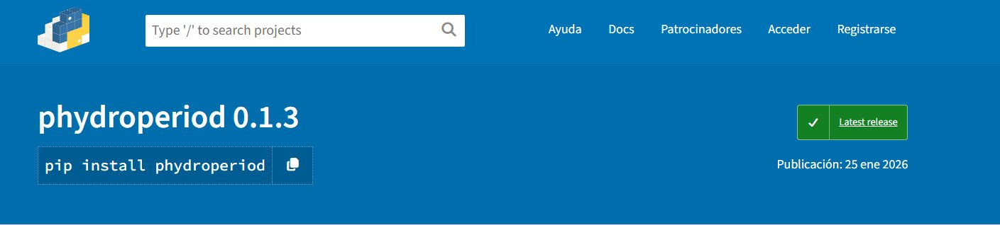
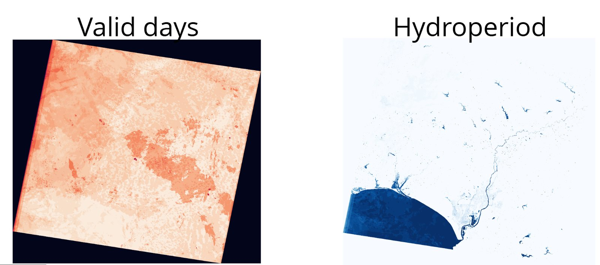
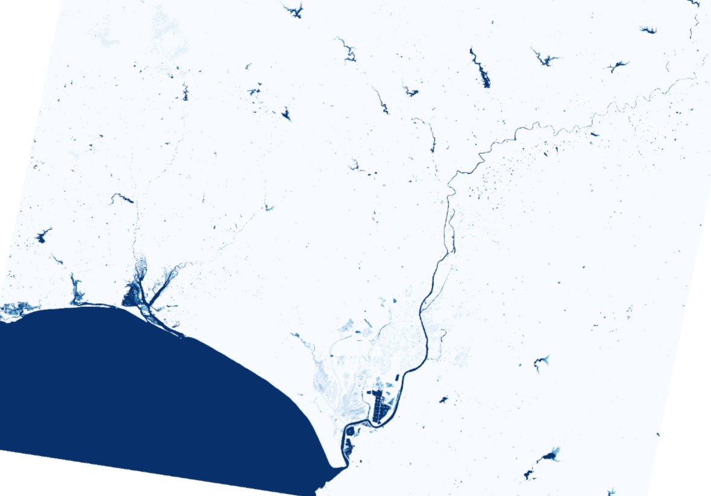
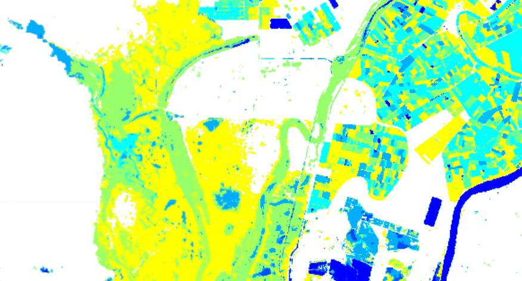
Tres notebooks — y el libro donde viven
Lo que viene no son diapositivas: son notebooks que se abren en Colab con un botón, se ejecutan con vuestra propia cuenta de Earth Engine y se cambian de sitio cambiando el ROI. Están en el repositorio, en workshops/ecoinformatica/notebooks.
ROIs y estadísticosDoñana
- Cinco maneras de decir dónde mirar
- El reductor manda: max, median, mean, p95
- El GIF, y un ráster de doce bandas a QGIS

HidroperiodoDoñana
- Días de inundación por año
- Ciclos 2021-2025 y anomalías
- Todo dentro de Earth Engine

FenologíaBajo Guadalquivir
- Inicio, pico y fin de estación
- Ráster, no una curva por punto
- El arroz y los años de sequía
Acabando, la clase y la espera
Si alguna vez la vida te maltrata,
acuérdate de mí,
que no puede cansarse de esperar
aquel que no se cansa de mirarte.
GitHub: @Digdgeo